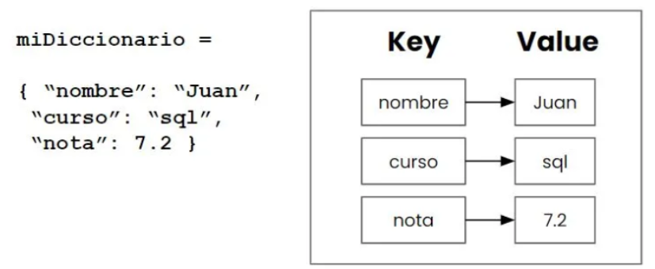

9. Diccionaris
Un diccionari és una col.lecció de dades que guarda la informació en parelles clau → valor. En lloc d’accedir al valor d'un element per la seva posició (com en una llista), hi accedixes per la seva clau.

9.1 Característiques
- Els seus elements van declarats entre claus
{ }, separant els elements amb comes, - Cada element està format per una parella
clau : valor - Són mutables
- No permeten claus duplicades
- Si s'afegix una clau repetida, el seu valor serà sobreescrit
- Les claus han de ser immutables
- Poden ser
str,int,tuple, però nolistodict. - En el cap valor es pot guardar qualsevol tipus de dades (mutables o immutables)
- Els seus elements
clau : valormantenen l'ordre d'inserció
Exemple
dic = {} # Diccionari buit
persona = {"nom": "Carlos",
"edat": 30,
"ciutat": "Madrid"}
print(persona)
print(persona["nom"]) # Accedeix al valor d'una clau.
{'nom': 'Carlos', 'edat': 30, 'ciutat': 'Madrid'}
Carlos
9.2 Modificació / accés
Podem afegir noves parelles clau/valor utilitzant la nomenclatura diccionari[clau] = valor.
Si una clau ja existeix, la modificarà.
El mètode diccionari.update({ }) ens permet afegir/modificar vàries parelles clau/valor a la vegada.
dic = {} # Diccionari buit
dic["ies"] = "teulada" # Afegir una nova clau
dic["provincia"] = "alacant"
dic["provincia"] = "california" # Modificar el valor d'una clau existent
dic.update({"telefon": 965739045, "estudis": ['ESO', 'BAT', 'FP']})
print(dic)
nom = dic["ies"] # Accedir a un valor (error si no existeix)
print(nom)
{'ies': 'teulada', 'provincia': 'california', 'telefon': 965739045, 'estudis': ['ESO', 'BAT', 'FP']}
teulada
Podem eliminar elements d'un diccionari de vàries formes:
- del diccionari[clau]: Elimina una clau i el seu valor
- diccionari.pop[clau]: Retorna el valor de la clau i després elimina l'element
- diccionari.clear(): Buida el diccionari
del dic["provincia"]
print(dic)
estudis = dic.pop("estudis")
print(dic)
print(estudis)
dic.clear()
print(dic)
{'ies': 'teulada', 'telefon': 965739045, 'estudis': ['ESO', 'BAT', 'FP']}
{'ies': 'teulada', 'telefon': 965739045}
['ESO', 'BAT', 'FP']
{}
9.3 Mètodes particulars i iteracions
Donada la particular estructura dels diccionaris, aquests disposen d'una sèrie de mètodes propis que ens ajuden a gestionar les dades emmagatzemades en ells:
diccionari.keys(): Retorna unobjectede tipusdict_keys(no una llista , string, tupla ...). Aquestobjecteconté totes les claus del diccionaridiccionari.values(): Retorna unobjectede tipusdict_valuesque conté tots els valors del diccionaridiccionari.items(): Retorna unobjectede tipusdict_itemsque conté totes les parelles(clau,valor)
Si fem un print() d'aquestos objectes propis dels diccionaris vorem que no se'ns mostren com una llista, fet que ens ha de fer pensar que no podem tractar-los d'igual forma.
persona = {"nom": "Carlos",
"edat": 30,
"ciutat": "Madrid"}
claus = persona.keys() # objecte dict_keys
print(claus)
valors = persona.values() # objecte dict_values
print(valors)
items = persona.items() # objecte dict_items
print(items)
dict_keys(['nom', 'edat', 'ciutat'])
dict_values(['Carlos', 30, 'Madrid'])
dict_items([('nom', 'Carlos'), ('edat', 30), ('ciutat', 'Madrid')])
Els objectes retornats pels mètodes .keys(), .values() i .items() podem utilitzar-los, per exemple, per a iterar sobre els diccionaris (recórrer-los).
for clau in persona.keys():
print(clau)
for valor in persona.values():
print(valor)
for clau, valor in persona.items():
print(clau, valor)
nom
edat
ciutat
Carlos
30
Madrid
nom Carlos
edat 30
ciutat Madrid
Podem simplificar el for si el que volem és iterar sobre les claus (serà el més habitual). Si es pasa directament el diccionari al bucle for, aquest iterarà sobre les seues claus.
print('Les parelles clau/valor són:')
for clau in persona:
print(clau, ' --> ', persona[clau])
Les parelles clau/valor són:
nom --> Carlos
edat --> 30
ciutat --> Madrid
Per tant, for clau in persona.keys(): és equivalent a for clau in persona:.
9.4 Operacions agregades (in, len, max, min, sum)
Les operacions agregades de Python poden utilitzar-se sobre els diccionaris. Moltes d'aquestes operacions treballen per defecte sobre les claus (max, min, sum). Si el que es vol és treballar amb els valors, s'ha d'utilitzar .values().
edats = {"Anna": 20,
"Pere": 25,
"Joan": 18 }
print(max(edats)) # "Pere"
print(max(edats.values())) # 25
print(min(edats.values())) # 18
print(sum(edats.values())) # 63
"Pere" in edats # True → busca entre les claus
25 in edats # False → NO busca entre els valors
25 in edats.values() # True → busca entre els valors
Exercici: La Rebel·lió 🌌
L’Aliança Rebel ha perdut part dels seus arxius i necessita la teua ajuda per reconstruir-los. Treballaràs amb diccionaris per gestionar la informació dels personatges de la galàxia.
Part 1: Creació de diccionaris
1.1. Crea dos diccionaris, anomenats luke i vader, amb les dades següents:
| Clau | Valor (luke) | Valor (vader) |
|---|---|---|
nom |
"Luke Skywalker" | "Darth Vader" |
planeta |
"Tatooine" | "Tatooine" |
bandol (sense accent) |
"Rebel·lió" | "Imperi" |
edat |
19 | 45 |
arma |
"Sabre làser" | "Sabre làser" |
1.2. Crea una llista anomenada personatges que continga els dos diccionaris anteriors.
Part 2: Modificació de diccionaris
2.1. Han passat els anys i ara Luke té 35 anys. Actualitza el diccionari luke.
2.2. Afegeix una nova clau rang al diccionari luke amb el valor "Mestre Jedi".
2.3. Afegeix una nova clau rang al diccionari vader amb el valor "Lord Sith".
2.4. Vader s’ha redimit! Canvia el valor de bandol a "Rebel·lió".
2.5. Elimina la clau arma del diccionari vader.
Part 3: Extracció de dades
3.1. Mostra per pantalla el nom i el planeta de Luke amb aquest format:
Luke Skywalker ve de Tatooine
3.2. Mostra totes les claus del diccionari luke.
dict_keys(['nom', 'planeta', 'bandol', 'edat', 'arma', 'rang'])
3.3. Mostra tots els valors del diccionari luke.
dict_values(['Luke Skywalker', 'Tatooine', 'Rebel·lió', 35, 'Sabre làser', 'Mestre Jedi'])
3.4. Recorre el diccionari luke amb un bucle for i mostra cada parella clau-valor així:
nom: Luke Skywalker
planeta: Tatooine
etc ...
3.5. Intenta obtenir la clau nau del diccionari vader utilitzant .get(), de manera que si no existeix mostre el missatge "Sense nau assignada" en lloc de donar error.
3.6. Recorre la llista personatges i mostra només el nom dels personatges que siguen de la Rebel·lió.
Bonus ⭐
Crea un diccionari naus on la clau siga el nom del pilot i el valor siga el nom de la nau:
| Clau | Valor |
|---|---|
Luke |
"X-Wing" |
Han |
"Falcó Mil·lenari" |
Vader |
"TIE Advanced" |
Després, demana a l’usuari un nom amb input() i mostra la seua nau. Si el pilot no existeix, mostra "Pilot desconegut".